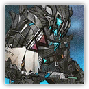
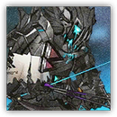

腐败骑士 Corrupted Knight
近战 物理；领袖 萨卡兹
|
 |
腐败骑士。散发着恐怖气息的断角萨卡兹骑士，有明显过度使用药物的痕迹。使用巨大的战锤作战，拥有粉碎敌人的可怕力量，眼中只有目标。当凋零溃退时，他将肩负起完成使命的职责，大幅提升作战能力。他踏出的每一步都是为了散播腐败。 |
腐败骑士丨Corrupted Knight
大型类人（萨卡兹），混乱邪恶
| AC 20 | 先攻 +6（14） |
| HP 255（30d8+120） | |
| 速度 30 尺 | |
| 调整 | 豁免 | 调整 | 豁免 | 调整 | 豁免 | |||||||||
|---|---|---|---|---|---|---|---|---|---|---|---|---|---|---|
| 力量 | 24 | +7 | +12 | 敏捷 | 14 | +2 | +2 | 体质 | 20 | +5 | +10 | |||
| 智力 | 8 | -1 | -1 | 感知 | 14 | +2 | +7 | 魅力 | 18 | +4 | +4 |
| 技能 运动+12，威吓+9，察觉+7 |
| 免疫 中毒；魅惑，恐慌（仅狂暴期间） |
| 感官 黑暗视觉120尺，被动察觉17 |
| 语言 通用语，卡西米尔语，萨卡兹语 |
| CR 16（XP 15,000；PB+5） |
特质 Traits
领袖抗性 Boss Resistance（2次/日）。腐败骑士豁免失败时，可以消耗50点生命值改为成功。
复仇狂暴 Vengeful Fury。当120尺内作为凋零骑士盟友的凋零骑士的生命值降至0时，腐败骑士陷入狂暴，持续1分钟。期间腐败骑士攻击检定具有优势，且免疫魅惑与恐慌状态。
动作 Actions
多重攻击 Multiattack。腐败骑士发动三次腐败战锤攻击。他可以将其中一次攻击替换为腐败粉碎（若已充能）。
腐败战锤 Corrupted Warhammer。近战攻击检定：+12（狂暴期间具有优势），触及5尺。命中：24（4d6+7）钝击伤害，且目标或者其5尺内的另一生物受到14（4d6）暗蚀伤害。
腐败粉碎 Corruption Smash（充能5~6）。 腐败骑士跃至15尺内一处可见的空置地面，将战锤猛砸而下。敏捷豁免检定： DC20，源自落点15尺球状区域内的每个地面生物。失败：目标受到44（10d10）钝击伤害外加11（2d10）暗蚀伤害，并陷入倒地状态。成功：仅半伤。
附赠动作 Bonus Actions
憎恨追击 Hatred Pursuit（仅狂暴期间）。腐败骑士向一名其可见的敌人直线移动至多等于其速度一半的距离。若该敌人在腐败骑士触及范围内，他可以立即对其发动一次腐败战锤攻击。
凋零骑士 Withered Knight
远程 法术；领袖 萨卡兹
|
 |
凋零骑士。散发着恐怖气息的断角萨卡兹骑士，有明显过度使用药物的痕迹。使用咒弓作战，能同时射击多个目标，并栽下凋零法术的种子。当腐败溃退时，他将肩负起完成使命的职责，大幅提升作战能力。与之敌对的骑士终将归于凋零。 |
凋零骑士丨Withered Knight
大型类人（萨卡兹），混乱邪恶
| AC 17 | 先攻 +11（24） |
| HP 255（30d8+120） | |
| 速度 30 尺 | |
| 调整 | 豁免 | 调整 | 豁免 | 调整 | 豁免 | |||||||||
|---|---|---|---|---|---|---|---|---|---|---|---|---|---|---|
| 力量 | 18 | +4 | +9 | 敏捷 | 24 | +7 | +7 | 体质 | 20 | +5 | +10 | |||
| 智力 | 8 | -1 | -1 | 感知 | 16 | +3 | +8 | 魅力 | 20 | +5 | +5 |
| 技能 察觉+8，奥秘+7，威吓+10 |
| 抗性 暗蚀，心灵 |
| 免疫 中毒；魅惑，恐慌（仅狂暴期间） |
| 感官 黑暗视觉120尺，被动察觉18 |
| 语言 通用语，卡西米尔语，萨卡兹语 |
| CR 16（XP 15,000；PB+5） |
特质 Traits
魔法抗性 Magic Resistance。凋零骑士对抗法术或魔法效应的豁免具有优势。
领袖抗性 Boss Resistance（2次/日）。凋零骑士豁免失败时，可以消耗50点生命值改为成功。
复仇狂暴 Vengeful Fury。当120尺内作为凋零骑士盟友的腐败骑士的生命值降至0时，凋零骑士陷入狂暴，持续1分钟。期间凋零骑士的攻击检定具有优势，且免疫魅惑与恐慌状态。
动作 Actions
多重攻击 Multiattack。凋零骑士发动两次凋零咒弓攻击。
凋零咒弓 Withering Greatbow。远程攻击检定：+12（狂暴期间具有优势），射程150/600尺。命中：23（3d10+7）穿刺伤害，外加16（3d10）暗蚀伤害。被此攻击命中的生物直到凋零骑士下回合结束前无法受益于隐形状态。
凋零爆破 Withering Detonation（充能5~6）。凋零骑士向至多三个150尺内的可见生物各发动一次凋零咒弓攻击。在凋零骑士的下回合开始时，被命中的生物身上的魔法爆破箭被引爆。敏捷豁免检定：DC19，每个处于源自爆炸箭15尺球状 区域内的敌人，处于复数重叠区域内仅受一次影响。失败：目标受到44（8d10）暗蚀伤害。成功： 仅受半伤。爆炸发生前，爆破箭可被一个生物以一个动作拔除，防止其引爆。
附赠动作 Bonus Actions
凋零分矢 Mark of Withering（仅狂暴期间）。凋零骑士移动至多等于其速度一半的距离，然后可以对一个本回合尚未攻击过的生物发动两次凋零咒弓攻击。本回合剩余时间内凋零骑士也不能再攻击该生物。